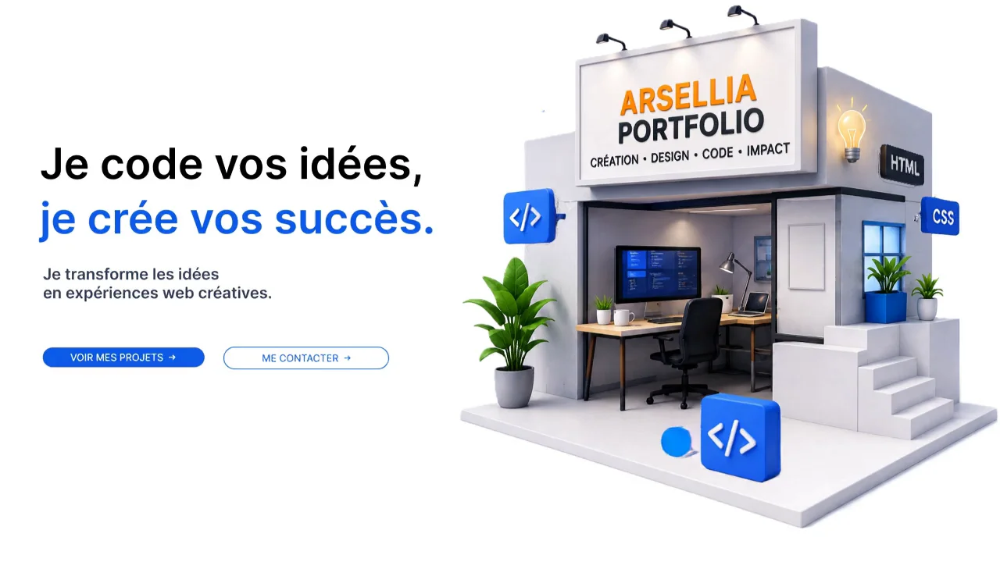
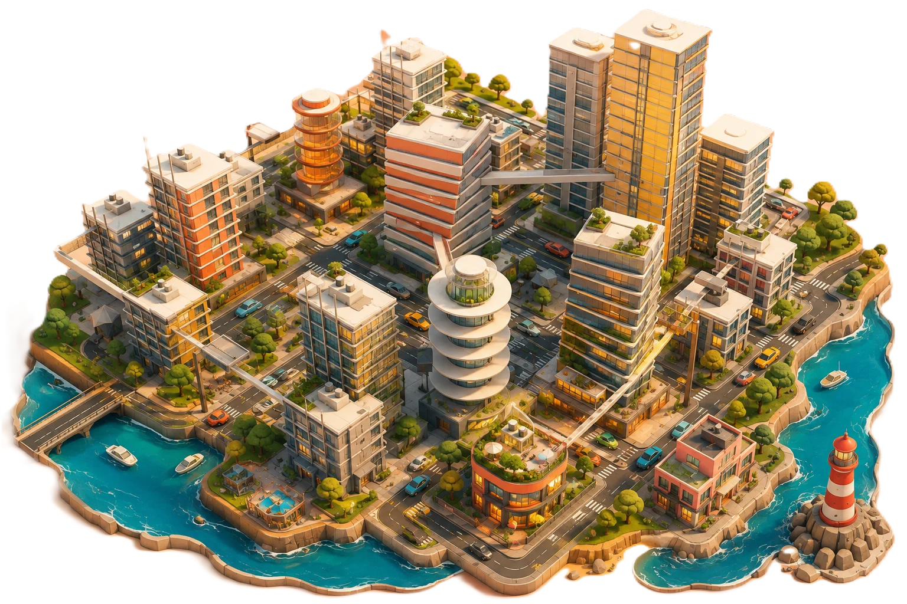

PORTFOLIO · PROJETS
Des idées prennent forme.
Explorez mes projets web et logiciels à travers une ville miniature interactive.
Parcourir les projets

PORTFOLIO · PROJETS
Explorez mes projets web et logiciels à travers une ville miniature interactive.
Parcourir les projets